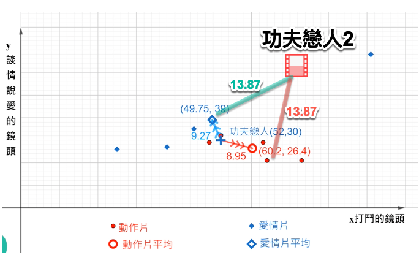
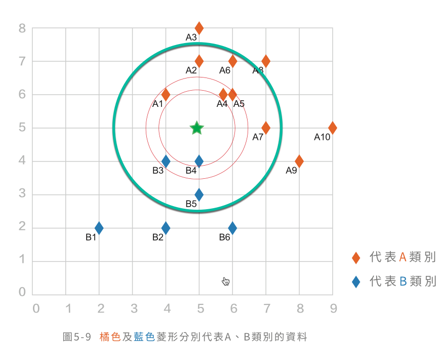
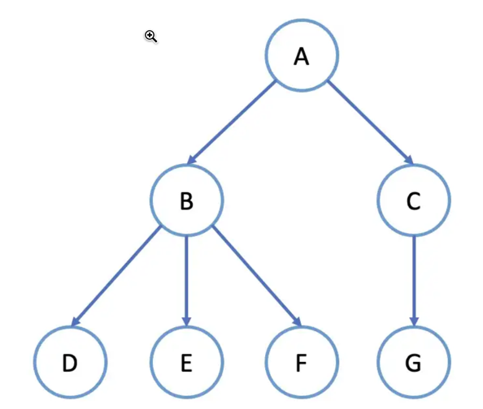
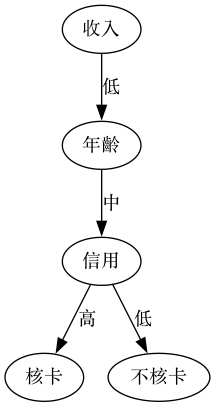
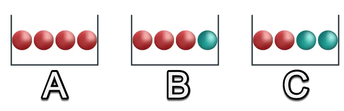
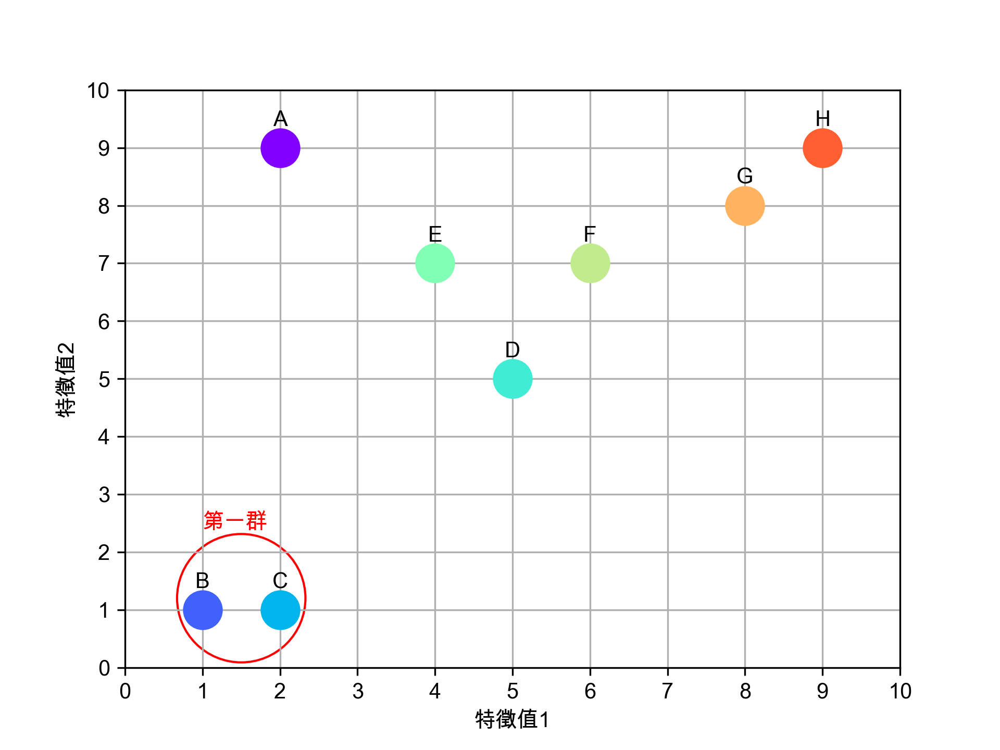
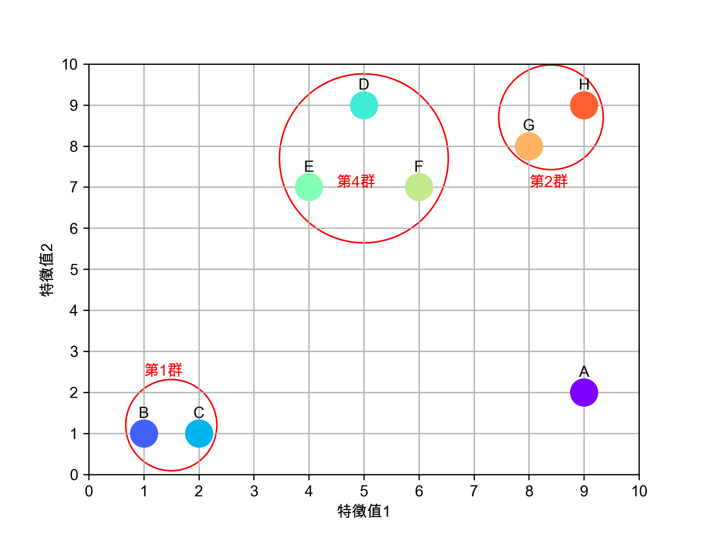
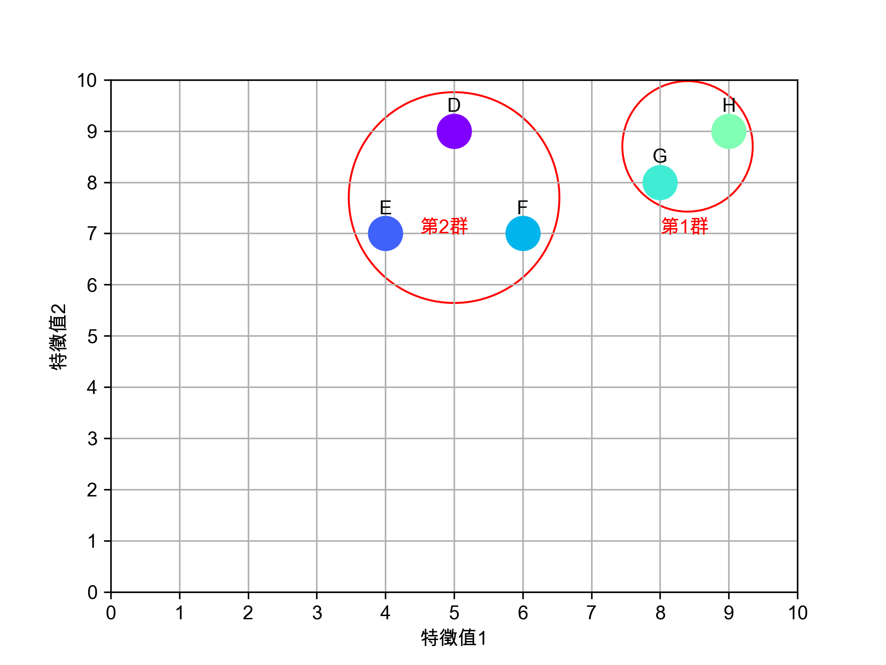

AI試題
1. DONE 題目 [15/15]
1.1. [X] 人工智慧的歷史 / A-3-1-S03
- [3] 在人工智慧發展的第一階段(1974-1978)，科學家已能利用感知器完成英文字母的辨識，然而人工智慧的發展卻到此停頓，直到1993年CNN之父LeCun提出LeNet模型後，人工智慧才被廣泛應用到支票判讀上。以下何者非造成這種停頓的主因：
- 經費短缺
- 社會大眾對人工智慧缺乏信心
- 當時電腦效能有限
- 不具實際應用價值
- 經費短缺
- [4] 1980年崛起的專家系統曾在人工智慧發展上被寄予厚望，事實上，如今在許多醫用的輔助醫療系統上仍能看到專家系統的影子，然而後來卻未見其更廣泛的發展與應用。造成專家系統發展停滯的原因為：
- 開發與維護成本過高
- 只適用於特定範圍的知識領域
- 商業價值過低
- 以上皆是
- 開發與維護成本過高
1.2. [X] 人工智慧的類型 / A-3-1-S04
- [1] 為了應付這學期的 AI 選修專題，小帆想開發一個能和電腦玩「剪刀、石頭、布」 的遊戲，她拍了很多不同手勢的照片，並為每張照片加上「剪刀、石頭、 布」的標籤，將這些照片和標籤丟進模型去訓練，希望最後電腦可以透過攝影鏡頭直接辨識出自己的手勢。請問小帆開發的這套軟體屬於哪一種類型的機器學習?
- 監督式學習
- 非監督式學習
- 半監督式學習
- 強化學習
- 監督式學習
- [2] 小哲初到任職銀行報到，手上的第一個任務是將貸款客戶分為VIP、優良、危險三個等級，銀行資料庫中可用的客戶資料包括客戶貸款金額、每月還款狀況、工作性質、每月薪資….等等。小哲先建立了一個AI模型，將客戶以這些資料為基礎分為三群，然後再觀察這三群裡的客戶資料狀況，最後將其命名為VIP、優良、危險，完成任務。請問小哲所開發的這個AI模型最有可能屬於以下哪一種機器學習類型?
- 監督式學習
- 非監督式學習
- 半監督式學習
- 強化學習。
- 監督式學習
1.3. [X] 資料整理與儲存 / A-3-2-S02
- [3] 人工智慧的重要基礎之一在於龐大的分析資料，然而這些資料往往都先經過重新整理之後才能被有效的分析，主要原因不包括：
- 資料可能有所缺漏
- 資料數值可能出現異常
- 資料數量過於龐大
- 資料所使用的單位不同
- 資料可能有所缺漏
[3] 下表為2022年11月16日台中地區的空氣品質即時監測結果，因不明原因，某些時段的監測結果未能被記錄下來，若依據插值法進行資料整理，請問表中的A、B兩格中應補入何值？
PM2.5(小時濃度值)
監測時間時間 5時 7時 9時 11時 13時 15時 17時 19時 臺中文山 19 A 17 21 20 14 15 17 臺中后里 17 14 12 13 10 26 20 31 臺中大甲 9 15 9 12 B 14 12 12 臺中鳥日 17 16 22 32 30 26 21 18 - A: 19, B: 12
- A: 17, B: 14
- A: 15, B: 20
- A: 18, B: 13
- A: 19, B: 12
1.4. [X] 最短距離分類器原理 / A-3-4-S03
- [1] 最短距離分類器是屬於以下哪一種類型的人工智慧？
- 監督式學習
- 非監督式學習
- 強化學習
- 深度學習
- 監督式學習
[3] 影片中，小明與小美因AI機器人的調解而合好，然而同樣的爭執因為「功夫戀人2」再度上演，此時AI機器人又故技重施計算最短距離，經過計算，AI機器人悲劇的發現：這部電影到「愛情片」與「動作片」中心點的歐幾里德距離都是13.87。請問此時冷汗直流的AI機器人應如何處置?

- 判定此電影為動作片
- 判定此電影為愛情片
- 丟硬幣決定此電影的類型
- 假裝當機
- 判定此電影為動作片
1.5. [X] 最短距離分類器運作 / A-3-4-S04
[3] 影片中的咖啡王子順利升職為專業經理人後，轉換到銀行信用卡部門。這次他負責核發客戶的信用卡額度，銀行擁有的客戶資料包括：
- 生日
- 職業類別
- 薪資
- 性別
咖啡王子想起進行最短距離分類前要先對資料進行標準化，請問以下哪一項客戶資料應該進行標準化：
- 生日
- 職業類別
- 薪資
- 性別
- 生日
[4] 由於在信用卡部門表現優異，咖啡王子又高升到貸款部門，這次他想先對客戶申請的貸款金額進行Min-Max標準化。目前手上客戶資料如下：
姓名 貸款金額 Min-Max標準化 張三 900000 2.000 李四 300000 0.100 王五 400000 0.250 趙六 500000 0.333 請問上表中哪一個人的標準化分數是正確的?
- 張三
- 李四
- 王五
- 趙六
- 張三
1.6. [X] KNN分類器原理 / A-3-4-S05
[4] KNN分類器的概念為「找出最接近自己的K個隣居，然後西瓜偎大邊，走到人最多的那一群裡」，下圖中，當K分別為1, 4, 9時，新的資料點分別會被歸為哪一類？

- A、B、A
- A、A、B
- B、B、A
- B、A、A
- A、B、A
- [2] 由上題中可以發現K的值會決定新進資料的分類結果，然而有可能會遇到「最接近的K個隣居裡，不同類別個數一樣」的問題，請問該如何處理較為合理？
- 換一個K值
- 由程式隨機指定新進資料的分類
- 隨機刪除某一個隣居
- 以上皆非
- 換一個K值
1.7. [X] KNN分類器運作/ A-3-4-S06
[A]下表為三位學生的資訊科期末考成績，請問經由Min-Max標準化轉換後，三人的分數分別為何?
Harrison Jane Niko 80 90 100 - Harrison: -0.5, Jane: 0, Niko: 0.5
- Harrison: -1, Jane: 0, Niko: 1
- Harrison: 1, Jane: 0, Niko: -1
- Harrison: 0.5, Jane: 0, Niko: -0.5
1: s = [80, 90, 100] 2: avg = sum(s)/3 3: for i in s: 4: print((i-avg)/(max(s)-min(s)))
-0.5 0.0 0.5
- Harrison: -0.5, Jane: 0, Niko: 0.5
[D]小美為病人開發了一套「心臟病預測系統」，為了評估這套系統的準確率(accuracy)，小美先從醫院資料庫中找了165筆記錄來測試（其中110人有心臟病，55人沒有）進行測試、並將測試結果製成如下的混淆矩陣(confusion matrix)。請問：根據這個混淆矩陣，小美這套系統準確率是多少？
預測結果:有心臟病 預測結果:沒有心臟病 實際情況:有心臟病 TP: 100人 FN: 5人 實際情況:沒有心臟病 FP: 10人 TN: 50人 - 0.95
- 0.83
- 0.64
- 0.91
- 0.95
1.8. [X] 樹狀結構 / A-3-4-S07
- [2]以下哪一種資料不適合以樹狀結構來呈現？
- 生物分類法(界、門、綱、目、科、)
- Google Map中城市間的路線規劃
- 學校網站架構
- 企業組識圖
- 生物分類法(界、門、綱、目、科、)
[3]下圖為一典型的樹狀結構圖，請問該圖有幾個葉節點(leaf node)?

- 1
- 3
- 4
- 6
- 1
1.9. [X] 決策樹的運作機制 / A-3-4-S08
[2]小哲今年剛進入銀行工作，他負責的業務是信用卡的發卡審核。為了有效將這個審核工作自動化，他挑選了三個申請者的特徵值來做為是否通過申請的依據。這三個特徵值分別為：
- 收入: 分為低、中低、中、高四個類別
- 年齡：分為低、中、高三個類別
- 信用等級：分為優、劣兩個類別
小哲打算利用這三個特徵值來製作一套判定是否核卡的決策樹。請問，這棵決策樹的最大樹高(height)可能為多少？
- 3
- 4
- 6
- 7

- 收入: 分為低、中低、中、高四個類別
- [1] 承上題，畫出第一棵決策樹後，小哲絕望的發現：根據手上的資料，他可以畫出好幾種不同版本的決策樹，光是樹的根節點(root)就有三個不同選擇。請問，小哲應該如何決定這三個特徵值在決策樹中的階層(也就是實際的判斷依據)？
- 選擇分能力最強的特徵值
- 由電腦隨機決定各特徵值的階層順序
- 選擇類別數最少的特徵值，即信用等級
- 選擇類別數最多的特徵值，即收入
- 選擇分能力最強的特徵值
- 在一棵決策樹中，最後的決策結果通常是出現在樹的：
- 根節點
- 父節點
- 子節點
- 葉節點
- 根節點
1.10. [X] 熵的意義與運作機制2 / A-3-4-S10
- [2] 下列有關「熵」的描述何者有誤？
- 以熵值評估丟擲骰子的結果，骰子越公正、熵值越高。
- 當所有的資料均屬於同一類型，其熵值越高。
- 目前國軍的性別比例具有很低的熵值。
- 資料分類能力越強的特徵值會使資料的熵值降低。
- 以熵值評估丟擲骰子的結果，骰子越公正、熵值越高。
[2] 關於下列A、B、C三個盒子中紅、藍球分佈的熵值描述，何者有誤?

- A = 0
- B = 0.25
- A < B < C
- C = 1
- A = 0
1: import numpy as np 2: # 3 decimal points 3: round = 3 4: # entropy(q) = -( q * log2(q) + (1-q) * log2(1-q) ) 5: def entropy(q): 6: if q == 0: 7: return 0 8: entropy = -(q * np.log2(q) + (1-q) * np.log2(1-q)) 9: entropy = np.round(entropy, round) 10: return entropy 11: 12: print(entropy(0)) 13: print(entropy(1/4)) 14: print(entropy(0.5))
0 0.811 1.0
1.11. [X] 決策樹的建構1 / A-3-4-S12
[3]小哲今年剛進入銀行工作，他負責的業務是信用卡的發卡審核。為了有效將這個審核工作自動化，他打算建立一棵決策樹來協助審核工入。他挑選了四個申請者的特徵值來做為是否通過申請的依據。這四個特徵值分別為：
- 收入: 分為低、高兩個類別
- 年齡：分為青、壯、老三個類別
- 信用等級：分為優、劣兩個類別
- 房產：分為有、無兩個類別
根據銀行內部的專家會議決策，這幾種特徵的核卡建議如下：
收入 年齡 信用等級 房產 核卡 低 青 低 無 否 低 青 低 有 否 低 青 高 無 是 低 青 高 有 是 低 壯 低 無 否 低 壯 低 有 否 低 壯 高 無 是 低 壯 高 有 是 低 老 低 無 否 低 老 低 有 否 低 老 高 無 否 低 老 高 有 是 高 青 低 無 否 高 青 低 有 否 高 青 高 無 否 高 青 高 有 是 高 壯 低 無 否 高 壯 低 有 否 高 壯 高 無 是 高 壯 高 有 是 高 老 低 無 否 高 老 低 有 否 高 老 高 無 是 高 老 高 有 是 在不進行熵值計算的前提下，請問小哲該挑選哪一個特徵值做為第一層的決策樹判斷？
- 收入
- 年齡
- 信用等級
- 房產
- 收入: 分為低、高兩個類別
- [2]有關「資訊獲利」的說明
- 熵值越小、資訊獲利越大
- 特徵值的類別越少、分類能力越高
- 其計算方式為分類前的熵值減去分類後的熵值
- 決策樹中特徵值的分類能力應該要和該特徵值在樹中的階層(level)呈反比
- 熵值越小、資訊獲利越大
1.12. [X] 決策樹h的建構3 / A-3-4-S14
[1]以如下四個特徵值來建構「是否核淮信用貸款申請」的決策樹：
- 收入: 分為低、高兩個類別
- 年齡：分為青、壯、老三個類別
- 信用等級：分為優、劣兩個類別
- 房產：分為有、無兩個類別
在建構決策樹時，下列何種情況不可能發生?
- 決策樹高度為6
- 在決定第一層特徵時，經計算發現4項特徵值的分類能力相同
- 決策樹的葉節點(leaf node)總數超過9
- 可以由決策樹的形狀「是否左右對稱平衡」來評估其決策效能
- 收入: 分為低、高兩個類別
- [2]下列何種應用程式不適合以決策樹來協助系統開發？
- 醫師處方用藥輔助系統
- 西洋棋對奕機器人
- 員工工作表現評做系統
- 電子商務行銷客群分析系統
- 醫師處方用藥輔助系統
1.13. [X] 單一連結2 / A-3-5-S09
[2]下圖為九個資料點依據其兩個特徵值所呈現的分佈圖，現在我們要對這些資料點進行階層式分群，已知：
- 第一次會將B、C兩點合併為第一群
- 第二次會將G、H兩點合併為第二群
根據單一連結聚合法，請問接下來會被合併成一群的是哪些資料點？

- E、D
- E、F
- F、G
- G、H
- 第一次會將B、C兩點合併為第一群
[1]下圖為九個資料點經過數次分群的結果，請問依照單一連結聚合法的計算，第2群與第4群的距離為多少（各點間距離請參考下表）。

A B C D E F G H A 0.00 8.06 7.07 8.06 7.07 5.83 6.08 7.00 B 8.06 0.00 1.00 8.94 6.71 7.81 9.90 11.31 C 7.07 1.00 0.00 8.54 6.32 7.21 9.22 10.63 D 8.06 8.94 8.54 0.00 2.24 2.24 3.16 4.00 E 7.07 6.71 6.32 2.24 0.00 2.00 4.12 5.39 F 5.83 7.81 7.21 2.24 2.00 0.00 2.24 3.61 G 6.08 9.90 9.22 3.16 4.12 2.24 0.00 1.41 H 7.00 11.31 10.63 4.00 5.39 3.61 1.41 0.00 - 2.24
- 3.61
- 4.24
- 5.66
- 2.24
1.14. [X] 完整連結2 / A-3-5-S11
[4]下圖為九個資料點經過數次分群的結果，請問依照完整連結聚合法的計算，第2群與第4群的距離為何（各點間距離請參考下表）?
A B C D E F G H A 0.00 8.06 7.07 8.06 7.07 5.83 6.08 7.00 B 8.06 0.00 1.00 8.94 6.71 7.81 9.90 11.31 C 7.07 1.00 0.00 8.54 6.32 7.21 9.22 10.63 D 8.06 8.94 8.54 0.00 2.24 2.24 3.16 4.00 E 7.07 6.71 6.32 2.24 0.00 2.00 4.12 5.39 F 5.83 7.81 7.21 2.24 2.00 0.00 2.24 3.61 G 6.08 9.90 9.22 3.16 4.12 2.24 0.00 1.41 H 7.00 11.31 10.63 4.00 5.39 3.61 1.41 0.00 - 2.24
- 4.00
- 4.12
- 5.39
- 2.24
[2]下圖為九個資料點經過數次分群的結果，依照完整連結聚合法，接下來會將第2群與第4群合併為第5群，請問，第6群的資料點為何（各點間距離請參考下表）?
A B C D E F G H A 0.00 8.06 7.07 8.06 7.07 5.83 6.08 7.00 B 8.06 0.00 1.00 8.94 6.71 7.81 9.90 11.31 C 7.07 1.00 0.00 8.54 6.32 7.21 9.22 10.63 D 8.06 8.94 8.54 0.00 2.24 2.24 3.16 4.00 E 7.07 6.71 6.32 2.24 0.00 2.00 4.12 5.39 F 5.83 7.81 7.21 2.24 2.00 0.00 2.24 3.61 G 6.08 9.90 9.22 3.16 4.12 2.24 0.00 1.41 H 7.00 11.31 10.63 4.00 5.39 3.61 1.41 0.00 - D、E、F、G、H
- A、B、C
- A、D、E、F、G、H
- B、C、D、E、F
- D、E、F、G、H
1.15. [X] 群數選擇 / A-3-5-S15
- [4]關於資料分群的結果評估(依據完整連結法)，下列何者正確？
- 同一群內資料，任兩點間的最短距離越小，內聚力越高
- 群與群間的最大距離越大，表示此分群法區分性越好
- 同一群的資料點相隔之最遠距離越大，DI值越高
- 群與群間的最大距離越小，DI值越低
- 同一群內資料，任兩點間的最短距離越小，內聚力越高
[3]下圖為六個資料點經過數次分群的結果，依照完整連結聚合法，請問此次分群的DI值為何（各點間距離請參考下表）?

D E F G H D 0.00 2.24 2.24 3.16 4.00 E 2.24 0.00 2.00 4.12 5.39 F 2.24 2.00 0.00 2.24 3.61 G 3.16 4.12 2.24 0.00 1.41 H 4.00 5.39 3.61 1.41 0.00 - 1.24
- 2.04
- 2.40
- 2.48
- 1.24
2. 影片資料庫
| 1-1 | 人工智慧的起源 | 0:09:50 | links |
| 1-2 | 人工智慧的應用現況 | 0:09:19 | links |
| 1-3 | 人工智慧的歷史 | 0:06:29 | links |
| 1-4 | 人工智慧的類型 | 0:08:34 | links |
| 1-5 | 人工智慧的未來發展 | 0:11:18 | links |
| 2-1 | 資料收集類型 | 0:07:46 | links |
| 2-2 | 資料整理與儲存 | 0:09:13 | links |
| 2-3-1 | 特徵選擇（含相關係數之概念）1 | 0:05:49 | links |
| 2-3-2 | 特徵選擇（含相關係數之概念）2 | 0:10:15 | links |
| 2-4 | 特徵距離：曼哈頓距離 | 0:04:41 | links |
| 2-5 | 特徵距離：歐幾里得距離 | 0:02:55 | links |
| 2-6 | 資料的標準化 | 0:15:26 | links |
| 2-7 | 資料集分割 | 0:10:55 | links |
| 3-1-1 | 資料探勘簡介1 | 0:07:44 | links |
| 3-1-2 | 資料探勘簡介2 | 0:09:49 | links |
| 3-2-1 | 關nnb聯式探勘1 | 0:07:29 | links |
| 3-2-2 | 關聯式探勘2 | 0:09:45 | links |
| 3-2-3 | 關聯式探勘3 | 0:09:27 | links |
| 3-3-1 | 序列式探勘1 | 0:09:07 | links |
| 3-3-2 | 序列式探勘2 | 0:09:01 | links |
| 3-3-3 | 序列式探勘3 | 0:10:39 | links |
| 4-1-1 | 監督式學習簡介1 | 0:04:59 | links |
| 4-1-2 | 監督式學習簡介2 | 0:07:09 | links |
| 4-2 | 最短距離分類器原理 | 0:09:54 | links |
| 4-3 | 最短距離分類器運作 | 0:11:23 | links |
| 4-4 | KNN分類器原理 | 0:10:22 | links |
| 4-5 | KNN分類器原理運作 | 0:12:12 | links |
| 4-6 | 樹狀結構 | 0:04:43 | links |
| 4-7 | 決策樹的運作機制 | 0:05:08 | links |
| 4-8-1 | 熵的意義與運作機制1 | 0:04:11 | links |
| 4-8-2 | 熵的意義與運作機制2 | 0:04:42 | links |
| 4-9 | 資訊獲利 | 0:04:53 | links |
| 4-10-1 | 決策樹的建構1 | 0:11:12 | links |
| 4-10-2 | 決策樹的建構2 | 0:12:13 | links |
| 4-10-3 | 決策樹的建構3 | 0:06:32 | links |
| 5–1 | 非監督式學習簡介 | 0:09:19 | links |
| 5–2-1 | K-means演算法介紹1 | 0:08:08 | links |
| 5–2-2 | K-means演算法介紹2 | 0:11:05 | links |
| 5–3-1 | K-means運作機制1 | 0:10:07 | links |
| 5–3-2 | K-means運作機制2 | 0:07:28 | links |
| 5–3-3 | K-means運作機制3 | 0:07:26 | links |
| 5–4 | 階層式分群法介紹 | 0:05:00 | links |
| 5–5-1 | 單一連結1 | 0:05:13 | links |
| 5–5-2 | 單一連結2 | 0:03:38 | links |
| 5–6-1 | 完整連結1 | 0:05:17 | links |
| 5–6-2 | 完整連結2 | 0:05:23 | links |
| 5–7-1 | 平均連結1 | 0:05:15 | links |
| 5–7-2 | 平均連結2 | 0:05:39 | links |
| 5–8 | 三種連結比較 | 0:12:16 | links |
| 5–9 | 群數選擇 | 0:08:41 | links |
| 6-1 | 增強式學習簡介 | 0:09:55 | links |
| 6-2 | 代理人(Agent)與獎勵值(Value)概念 | 0:10:03 | links |
| 6-3 | 貝爾曼方程概念 | 0:08:26 | links |
| 6-4 | 貝爾曼方程運作 | 0:07:33 | links |
| 6-5 | 馬可夫決策 | 0:06:38 | links |
| 6–6-1 | Q學習概念1 | 0:07:11 | links |
| 6–6-2 | Q學習概念2 | 0:07:38 | links |
| 6–7-1 | 時值差異TD1 | 0:06:26 | links |
| 6–7-2 | 時值差異TD2 | 0:07:19 | links |
| 6–8-1 | Q學習運作(更新Q表之Q值)1 | 0:05:48 | links |
| 6–8-2 | Q學習運作(更新Q表之Q值)2 | 0:07:48 | links |